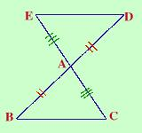

|
Dato il triangolo ABC si prolunghino i lati AB ed AC oltre A di due segmenti AD=AB ed AE=AC. Dimostrare che sono congruenti i segmenti BC e DE. Qui e' semplice perche' l'ipotesi e' fino al punto e la tesi e' dopo "dimostrare che", inoltre ho gia' segnato le cose congruenti in figura, quindi  Ipotesi
tesi
|